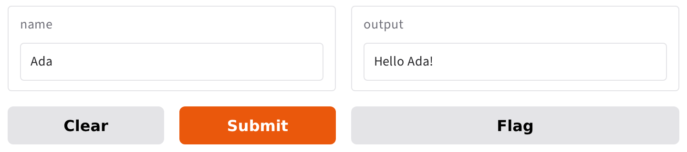
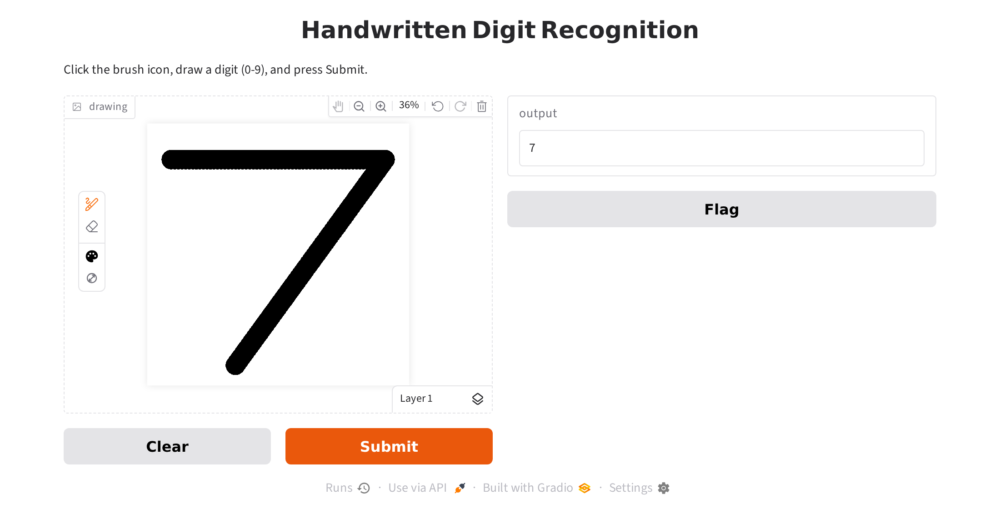
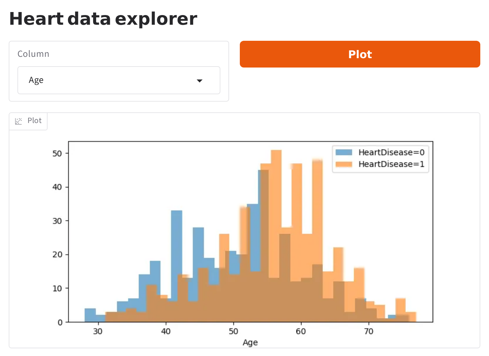
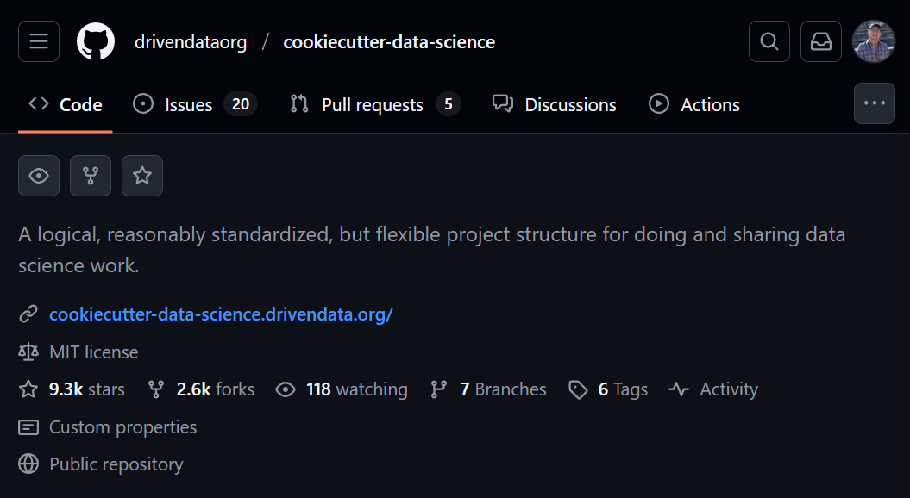

conda not found in Git Bash? One-time fix: steps 1 and 4 in class-material/setup.md.
Last time: python -m venv. A conda environment is the same idea, an isolated set of packages, and it also lets us pick the Python version (3.12).
requirements.txt: one file, every package for the course, with tested versions.
It includes PyTorch (for tabicl, Session 2), which is big. Start now; it installs while we review.
Q1 You just opened a terminal. Which command tells you which folder you are in, and which one lists what is in it?
pwd prints the working directory; ls lists its contents (ls -la also shows hidden files such as .venv and .git).Q2 You edited analysis.py and want it on GitHub. Put these in order:
git push git commit -m "Fix date parsing" git add analysis.py
git add → git commit → git push. Stage it, snapshot it, send it to the remote.Q3 You activated your environment. How do you confirm which Python will run before you pip install anything?
where python (Anaconda Prompt) or which python (Git Bash, Mac). The first result should be inside your environment’s folder (.venv, or envs\dapt619 for conda), not the base install.Q4 A classmate wants to run your project with the same packages. Which two commands do you run on your side and theirs?
pip freeze > requirements.txt (and commit it). They: create and activate a fresh venv, then pip install -r requirements.txt.Launched Dec 11, 1998. Lost Sep 23, 1999: it burned up in Mars’ atmosphere. Cost: about $327M.
One team’s software reported thruster force in pound-force seconds; the navigation software expected newton-seconds. Every number was off by 4.45×. Nothing crashed.
A Python function expects kilometers but receives miles. Would the code necessarily crash?
No. Python has no idea what a unit is: 1.0 mile is silently used as 1.0 km, and every number downstream is plausibly wrong. That’s why tests check the values, not just that the code ran.
A test checks the outcome of a specific behavior and ensures it aligns with the expectations.
The focus is less on how or why it happened, and more on what happened.
def add_number(a, b): return a + b
def test_add_number(): assert add_number(3, 5) == 8 assert add_number(-1, 1) == 0 assert add_number(0, 0) == 0
addition.py # built live src/addition.py # complete version
def add_number(a, b): return a - b # typo def test_add_number(): assert add_number(3, 5) == 8 assert add_number(-1, 1) == 0 assert add_number(0, 0) == 0
Three asserts. Which ones fail? What does pytest report?
add_number(0, 0) would have passed even with the typo.print(add_number('x', 'y')) print(add_number('x', 5))
One input silently returns nonsense (the Mars Climate Orbiter problem), the other crashes. Neither is what a function called add_number should do.
def add_number(a, b): if not isinstance(a, (int, float)) \ or not isinstance(b, (int, float)): raise TypeError("add_number expects two numbers") return a + b def test_add_number_rejects_strings(): with pytest.raises(TypeError): add_number('x', 'y')
Run pytest -q again: the old tests still pass. That is the safety net: you changed the function and know you didn’t break anything.
test_*.py or *_test.pytest_*assert, no special methods to learn.passedFfailed: an assert was false (or the test raised)Eerror before the test ran, e.g., the code that prepares its test data (a fixture, coming up) crashedsskipped on purpose, e.g., @pytest.mark.skipif(no_gpu)Your manager asks for a percent_change(old, new) helper for the weekly sales report. Before writing it, agree on what it should return:
| old | new | expected |
|---|---|---|
| 80 | 100 | 25.0 |
| 100 | 80 | −20.0 |
| 50 | 50 | 0.0 |
| 3 | 3.3 | 10.0 |
| −50 | −25 | 50.0 ? |
| 0 | 10 | error |
Losses shrink from −50 to −25. Is that +50% or −50%? The code can’t answer that; the business has to.
Growth from zero is undefined. Return inf? None? Raise an error? Decide, then test the decision.
def percent_change(old, new): if old == 0: raise ValueError("old value cannot be zero") return (new - old) / abs(old) * 100
parametrizeimport pytest from metrics import percent_change @pytest.mark.parametrize("old, new, expected", [ ← a decorator (80, 100, 25.0), (100, 80, -20.0), (50, 50, 0.0), (-50, -25, 50.0), ]) def test_percent_change(old, new, expected): assert percent_change(old, new) == expected
@something line right above a def. It changes how the function is used without changing its code. Here it tells pytest: “run this test once per row.”def test_percent_change_float(): assert percent_change(3, 3.3) == 10.0
assert percent_change(3, 3.3) == pytest.approx(10.0)
Same reason 0.1 + 0.2 == 0.3 is False in Python.*
def percent_change(old, new): if old == 0: raise ValueError("old value cannot be zero") return (new - old) / abs(old) * 100
def test_percent_change_zero_old(): with pytest.raises(ValueError): percent_change(0, 10)
Passes only if a ValueError is raised. If someone “fixes” the function to quietly return 0, this test catches it.
0.1 + 0.2 Isn’t 0.3A fraction ends only if its denominator is built from the base’s factors (2s and 5s). A 3 doesn’t divide 10, so 1/3 repeats forever.
0.1 = 1/10 = 1/(2 × 5). Base 2 has no 5, so in binary 0.1 never ends.
Python keeps 53 binary digits and rounds the rest, so it stores the closest value it can:
from decimal import Decimal Decimal(0.1) # 0.1000000000000000055511151231257827… Decimal(0.5) # 0.5 (1/2 is exact in binary) 0.1 + 0.2 # 0.30000000000000004: two tiny errors add up
Rule of thumb: never compare floats with ==. Use pytest.approx in tests, math.isclose in code.
def clean_customers(df): out = df.drop_duplicates( subset="customer_id").copy() out["state"] = (out["state"] .str.strip().str.upper()) return out
@pytest.fixture ← a decorator that makes raw() a fixture def raw(): return pd.DataFrame({"customer_id": [1, 1, 2], "state": [" va", " va", "NC "]}) def test_removes_duplicates(raw): ← pytest passes it in assert clean_customers(raw)["customer_id"].is_unique def test_normalizes_state(raw): assert list(clean_customers(raw)["state"]) == ["VA", "NC"] def test_does_not_modify_input(raw): before = raw.copy() clean_customers(raw) # result not needed here pd.testing.assert_frame_equal(raw, before)
Will these three tests pass or fail?
.copy() isn’t what protects the input: drop_duplicates already returns a new DataFrame. It just silences a SettingWithCopyWarning in pandas 2.src/heart_tutorial.py # fill in the blanks src/heart.py # complete: just run it
pytest-demo, copy src/heart_tutorial.py and data/heart.csv from the repo (see pytest.md). Finish load_heart() so it returns data/heart.csv as a DataFrame.pytest -v heart_tutorial.py. It should pass.heart_disease exists. It fails. Read the error message and figure out why.import pandas as pd def load_heart(path="data/heart.csv"): return pd.read_csv(path) def test_has_twelve_columns(): assert ...
Column checks prove the file loaded. Now write tests from what a clinician would expect. Pick two:
Age is between 18 and 100.Sex only contains "M" or "F".HeartDisease only contains 0 and 1.Cholesterol and RestingBP are greater than 0.Run pytest -v heart_tutorial.py. Which tests fail? How many rows are affected?
Stretch: rewrite 8 with @pytest.mark.parametrize("col", [...]) so each column is its own test.
Make failures explain themselves with an assert message:
def test_cholesterol_positive(): df = load_heart() bad = (df["Cholesterol"] <= 0).sum() assert bad == 0, f"{bad} rows have Cholesterol <= 0"
HeartDisease, not heart_disease. The test was right to fail: the assumption was wrong, not the data.Cholesterol = 0 and 1 row has RestingBP = 0. Nobody has zero cholesterol: these are missing values in disguise. The “no nulls” test passed and still missed them.Now what? Fix the data, fix the test, or ask the people who collected it?
A failing test is a question for a stakeholder, not just a bug.
Unit tests are written by whoever writes the code. Independent testing happens at the levels above, by people who start from the requirements.
Q1 You run pytest in a folder with these files. Which one does pytest not collect by default?
test_*.py and *_test.py, in subfolders too.Q2 Does this test pass?
def test_sum(): assert 0.1 + 0.2 == 0.3
0.1 + 0.2 is 0.30000000000000004. Use pytest.approx(0.3).Q3 Pytest prints ..F.E. How many tests passed, and what is the difference between F and E?
F: the test ran and failed (an assert was false). E: something broke before the test could run, such as a fixture raising an error.Q4 load_data("") should raise a ValueError for an empty path. Write the test.
with pytest.raises(ValueError): load_data(""). It fails if no error, or a different error, is raised.Q5 True or False: if all of your tests pass, your code is correct.
heart.csv while 172 cholesterol values were zero. Tests reduce risk; they don’t prove correctness.“That’s a problem for future Homer. Man, I don’t envy that guy.”
Six months from now, the details will be fuzzy: why you dropped those rows, which notebook made the chart, what df2_final_v3 means.
And it isn’t just you: teammates, reviewers, and whoever runs, maintains, or builds on your code need the same answers.
“Let us change our traditional attitude to the construction of programs.
Instead of imagining that our main task is to instruct a computer what to do, let us concentrate rather on explaining to human beings what we want a computer to do.”
Knuth wrote this in 1984. Is it more or less true now that AI writes the code?
.py filesClean into a new file or DataFrame. Never edit the original, so you can always start over.
Put data/ in .gitignore. Small files that rarely change are fine to commit.
.py files repeatAnything you rerun, reuse, or test belongs in src/.
Raw data → code → output, with no loops. Anyone can rerun it from scratch and get the same result.
| ProjectBrief_FINAL (2).pptx | ✗ spaces, parentheses, “FINAL (2)” |
| Sales Report 12-04-09.csv | ✗ spaces; is it Dec 4 or Apr 9? 2009 or 2012? |
| 2012-04-09_sales-report.csv | ✓ ISO date first, so it sorts |
| 2025-09-24_project-brief_v03.pptx | ✓ date, words, zero-padded version |
| 20250924_lab_notes.md | ~ sorts fine, harder for humans to read |
Machine-readable, human-readable, and they sort in a useful order (Jenny Bryan’s three rules).
churn-project/ ├── README.md ├── requirements.txt ├── pyproject.toml ├── data/ │ ├── raw/ # never edited │ └── processed/ ├── notebooks/ │ └── 01_explore.ipynb ├── src/ │ ├── cleaning.py │ └── metrics.py └── tests/ ├── test_cleaning.py └── test_metrics.py
src/.tests/, one test file per module.[tool.pytest.ini_options]
pythonpath = ["src"]
pytest finds the tests in tests/ on its own; this tells Python where the code they import lives (from metrics import …). Run pytest from the project root.
Q1 Which file name is best?
Q2 Your cleaning script ends with df.to_csv("data/raw/churn.csv"), overwriting the file it read. Which rule of thumb does this break most directly?
.py files repeatdata/processed/ instead.Q3 You copy-pasted the same clean_customers() function into three notebooks. Where should it live instead, and where do its tests go?
src/ (e.g. src/cleaning.py), imported by all three notebooks. Its tests go in tests/test_cleaning.py.Gradio · Polars · Foundation models for tabular data
model.predict(X_new)
# array([1])
Works in your notebook, on your laptop.
“Cool. Can I try it?”
No Python, no notebook, no venv.
A web app around your function, in a few lines of Python. No HTML, CSS, or JavaScript.
gr.Interfaceimport gradio as gr def greet(name): return "Hello " + name + "!" demo = gr.Interface( fn=greet, 1 inputs="textbox", 2 outputs="textbox", 3 ) demo.launch()
fn: any Python function
2inputs: one component per argument
3outputs: one component per return value

Gradio builds the page, the Submit and Clear buttons, and the web server.
fn with your model, data, and packagesCtrl + C) or close the terminal on your computer, and the app is gone.Shortcut strings work too: inputs="textbox" is the same as inputs=gr.Textbox(). Use the class when you need options such as label= or value=.
gr.Interface(fn, inputs, outputs)gr.Interface(fn, None, outputs)gr.Interface(fn, inputs, None)gr.Interface(fn, inputs, inputs)Anyone can try your model: draw, upload, or type, and get a prediction. No Python needed on their side.
Demo 1 · draw a digitDropdowns, sliders, and buttons over a DataFrame: filter, group, plot. A lightweight dashboard for the questions people actually ask.
Demo 2 · heart data explorerPut a person in the loop: show the model’s output next to the source, record ✓ / ✗ or the right answer, save it. Those rows become your test set or your training labels.
e.g. Did the vision model read the right product dimensions from a vendor’s PDF catalogue?
Where in your job would one of these save someone an email, a spreadsheet, or a meeting?
Draw a digit, get a prediction
pip install gradio src/digits_app_tutorial.py # fill in the blanks src/digits_app.py # complete: just run it
if __name__ == "__main__":the “main guard”
demo = gr.Interface(...) if __name__ == "__main__": demo.launch()
Python sets __name__ for every file it loads.
$ python digits_app.py
__name__ is "__main__" → the app launches
from digits_app import predict_digit
__name__ is "digits_app" → nothing launches; you just get the code to use or test
Read it as: “run this part only when this file is the one being run.”
model = joblib.load("models/digit_model.pkl") def predict_digit(drawing): if drawing is None or drawing["composite"] is None: return "Please draw a digit first!" img = ImageOps.invert(drawing["composite"]) img = img.crop(img.getbbox()) img = ImageOps.pad(img, (max(img.size),) * 2) pixels = np.array(img.resize((8, 8))) / 255 * 16 return int(model.predict(pixels.reshape(1, -1))[0]) demo = gr.Interface( fn=predict_digit, inputs=gr.Sketchpad(type="pil", image_mode="L"), outputs="text", )
Highlighted: make the drawing look like the training data: white on black, cropped, square, 8×8 pixels on a 0–16 scale.

Click the brush icon before drawing. The canvas’s trash-can icon wipes it.
The heart data, as a point-and-click explorer
python src/heart_app.py # from the repo root
gr.Blockswith gr.Blocks() as demo: gr.Markdown("# Heart data explorer") with gr.Row(): # side by side col = gr.Dropdown(NUMERIC, value="Age", label="Column") btn = gr.Button("Plot", variant="primary") plot = gr.Plot() btn.click(fn=plot_column, # event → function inputs=col, outputs=plot) demo.launch(share=True) # + a public link
gr.Row, gr.Column, gr.Tab.click, .change, .submit wire a component to a functionInterface; switch to Blocks when you need layout or more than one button.
src/heart_app.pydemo.launch()
http://127.0.0.1:7860
Only you, on your machine.
demo.launch(share=True)
https://….gradio.live
Anyone with the link, for 1 week. It still runs on your laptop: close it and the link dies.
A permanent URL; runs on their servers, even when your laptop is off.
Careful: a public app exposes whatever your function can reach: files, API keys, your data.
Appendix B: API, MCP & Hugging Face hosting →Q1 Your function is def churn_risk(tenure, plan): return label, prob. How many input and output components does its gr.Interface need?
gr.Number and a gr.Dropdown in, a gr.Textbox and a gr.Number out.Q2 You ran demo.launch(share=True), sent the link to your manager, and closed your laptop. Can your manager still use the app?
Q3 When would you switch from gr.Interface to gr.Blocks?
Written from scratch in Rust, multi-threaded, columnar. Built for modern processors.
Expressions read like the question you are asking. Familiar if you know pandas or SQL.
MIT license, with an active community of contributors.
The goal: a lightning-fast DataFrame library that…
# pandas, one row at a time df["price_with_tax"] = df.apply( lambda row: row["price"] * 1.1, axis=1)
One value, then the next, then the next… in Python.
# Polars, the whole column in one operation df.with_columns( (pl.col("price") * 1.1).alias("price_with_tax"))
One operation on the entire column, split across all your cores.
pandas has fast column math too (df["price"] * 1.1), but on one core, and .apply quietly falls back to row by row.
How many delivered orders per year? (olist_orders.csv.gz, 99,441 orders)
df = pd.read_csv(path,
parse_dates=["order_purchase_timestamp"])
(df[df["order_status"] == "delivered"]
.groupby(df["order_purchase_timestamp"].dt.year)
.size())
(pl.read_csv(path, try_parse_dates=True) .filter(pl.col("order_status") == "delivered") .group_by(pl.col("order_purchase_timestamp") .dt.year().alias("year")) .len() .sort("year"))
filter, group_by, sortpl.col(...) expressions insteadgroupby, the group keys become the index, which is why you often see .reset_index(). Polars has no index: rows are just rows, and keys stay ordinary columns.q = (pl.scan_csv(path, try_parse_dates=True) .filter(pl.col("order_status") == "delivered") .group_by(pl.col("order_purchase_timestamp") .dt.year().alias("year")) .len() .sort("year")) print(q.explain()) # the plan, nothing read yet q.collect() # now it runs
read_csvEager: each line runs immediatelyscan_csvLazy: builds a plan; runs on .collect()Polars read the whole plan first, so it only loads 2 of 8 columns and filters while reading.
pandas can’t do this: it runs each line as you write it, without knowing what comes next.
q = (spark.read.csv(path, header=True) .filter(F.col("order_status") == "delivered") .groupBy(F.year("order_purchase_timestamp") .alias("year")) .count() .orderBy("year")) # transformations: just a plan q.show() # action: now it runs
Same answer as Polars, and Spark’s plan also reads only 2 columns and filters while reading.
Both are lazy: Polars runs at .collect(), Spark at an action like .show(). Until then, each just builds a plan.
clean = (
df.unique() # drop duplicate rows
.with_columns(
pl.col("city").str.strip_chars() # trim spaces
.str.to_titlecase(), # fix casing
pl.when(pl.col("age") == 0) # 0 = unknown
.then(None)
.otherwise(pl.col("age"))
.alias("age"),
pl.col("spend").fill_null(0), # missing → 0
)
.filter(pl.col("spend") >= 0) # keep valid rows
.drop("notes") # remove a column
)
.to_pandas() needs pip install pyarrow.pip install polars
notebooks/01_polars_wrangle.ipynb
notebooks/02_lazy_evaluation.ipynb
Q1 q = pl.scan_csv("orders.csv").filter(...). When does Polars actually read the file?
q.collect(). scan_csv builds a plan; read_csv reads immediately.Q2 q.explain() prints PROJECT 2/8 COLUMNS. What does that mean?
Q3 Fill in the blanks so that age == 0 becomes a missing value and every other age is kept:
pl.when(pl.col("age") == 0).______(None).______(pl.col("age"))
.then(None) and .otherwise(pl.col("age")). Then add .alias("age") to replace the column; without it, Polars names the result literal.A new model for every dataset. Gradient descent or tree building on your data, plus hyperparameter search.
One forward pass. No training on your data, no tuning. Your training set is the context, like examples in a ChatGPT prompt.
This is in-context learning, the same trick that lets an LLM follow a few examples, applied to tables.
There is no “internet of tables” to learn from. So TabPFN and TabICL learn from fake ones.
The model never memorizes any one dataset. It learns a general skill: given labeled rows, predict new ones. In the original paper this is called a prior-data fitted network (PFN).
Do LLMs like ChatGPT memorize the internet, or learn general skills the same way?
Both. They mostly learn patterns that generalize, but they can also repeat text they saw many times, word for word. A tabular model trained only on synthetic tables has no real data to memorize.
“In 2.8 s, TabPFN outperforms an ensemble of the strongest baselines tuned for 4 h in a classification setting.”
pip install tabpfn · code is Apache-2.0, but recent weights are non-commercial and need a Prior Labs login to download. Slow on CPU; a GPU or their hosted API is recommended.
.fit() / .predict() as scikit-learn# pip install tabicl from tabicl import TabICLClassifier clf = TabICLClassifier(random_state=314) clf.fit(X_train, y_train) # no training proba = clf.predict_proba(X_test)[:, 1]
Same interface as every scikit-learn model you already know.
| model | tuning | test AUC |
|---|---|---|
| Logistic regression | none | 0.919 |
| Gradient boosting | none | 0.927 |
| TabICL | none | 0.932 |
On a small, clean dataset everyone is close. The gap grows on messier data and when the baselines aren’t tuned by an expert.
src/tabicl_heart.pyYour bank wants to replace its credit model with TabPFN. What would you test before saying yes?
Appendix C: KumoRFM & the landscape →Q1 What does TabICLClassifier().fit(X_train, y_train) mostly do?
Q2 On the same data, logistic regression predicts in milliseconds but TabICL takes seconds. Why?
Q3 Name one reason a bank might not use TabPFN for its credit-approval model, even if it has the best AUC.
You just joined a telecom’s analytics team. A colleague left you churn_raw.csv. Nobody has checked it.
Most points are for your judgment calls (what’s wrong with the data, which model to trust, what to recommend) and for showing that you ran the code.
git clone https://github.com/vishal-git/dapt-619.git
(already have it? git pull), then open:
class-material/HW_instructions.mdstarterhomework/datadata/churn_raw.csv
The best way to ensure reproducibility is to treat your data analysis pipeline as a directed acyclic graph (DAG).
This means each step of your analysis is a node in a directed graph with no loops. You can run through the graph forwards to recreate any analysis output, or you can trace backwards from an output to examine the combination of code and data that created it.
That proper data analysis is a DAG means that raw data must be treated as immutable—it's okay to read and copy raw data to manipulate it into new outputs, but never okay to change it in place.
Another consequence of treating data as immutable is that data doesn't need source control in the same way that code does.
Therefore, by default, the data/ folder is included in the .gitignore file.
If you have a small amount of data that rarely changes, you may want to include the data in the repository.
Source code is superior for replicability because it is more portable, can be tested more easily, and is easier to code review.
from gradio_client import Client client = Client("http://127.0.0.1:7860/") client.predict("Ada", api_name="/greet") # 'Hello Ada!'
Click Use via API at the bottom of any Gradio app to see this code for that app.
# pip install "gradio[mcp]" demo.launch(mcp_server=True)
Each function becomes an MCP tool that Claude, ChatGPT, or Cursor can call. Its docstring becomes the tool’s description.
Remember the conductor? This is how you hand your model to the orchestra.
spaces/digits/ # everything the Space needs
spaces/digits/ ├── app.py # must be named app.py ├── requirements.txt # what pip installs ├── digit_model.pkl # the trained model └── README.md # settings for the Space
# requirements.txt scikit-learn==1.9.1 # version that saved the model numpy pillow joblib
# README.md (top of the file)
---
title: Digit Recognition
sdk: gradio
sdk_version: 6.32.0
app_file: app.py
---
pip install -r requirements.txt, then python app.py.requirements.txt, it doesn’t exist on the server.huggingface.co/new-space → name it, pick the Gradio SDK, choose hardware, keep it public.
Files tab → Add file → Upload files: drag in the four files, then Commit.
“Building” → “Running”. If it fails, open the Logs: it’s usually a missing package in requirements.txt.
huggingface.co/spaces/<you>/<space>: works on a phone, no laptop needed.
Prefer the terminal? A Space is a git repo: git clone it, copy the files in, git push. Or run gradio deploy inside the folder.
@spaces.GPU. On your laptop the decorator does nothing.app.py.import spaces @spaces.GPU def predict_digit(drawing): ...
Today: create a free Hugging Face account now; in 30 days you can host your own.
Real business data lives in many linked tables: customers, orders, products. Normally you spend days joining them and engineering features.
KumoRFM treats the whole database as a graph (rows are nodes, foreign keys are edges) and predicts from it directly. You write the question as a query:
PREDICT SUM(orders.amount, 0, 30, days) FOR EACH customers.customer_id
“How much will each customer spend in the next 30 days?”
| approach | AUROC | effort |
|---|---|---|
| LightGBM + hand features | 62.4 | ~12 h, ~880 lines |
| Supervised graph NN | 75.8 | ~30 min |
| KumoRFM, zero-shot | 76.7 | ~1 s, 1 query |
| KumoRFM, fine-tuned | 81.1 |
Vendor-reported numbers. Kumo was reportedly acquired by NVIDIA in 2026; the model now ships as NVIDIA Kumo Relational.
Prior Labs. The one that started it (Nature 2025).
Inria. Scales to large tables; fully open.
Kumo / NVIDIA. Multi-table relational data.
Amazon. Ships inside AutoGluon.
Layer 6. Pretrained on real tables, not synthetic.
Also models missing values; Apache-2.0.
Want to compare them? TabArena is a living leaderboard. Foundation models currently sit above tuned gradient boosting, especially on small data.
↩ Back to the lecture| venv + pip | conda | uv | |
|---|---|---|---|
| create | python -m venv .venv | conda create -n dapt619 python=3.12 | uv venv --python 3.12 |
| activate | source .venv/Scripts/activate | conda activate dapt619 | source .venv/Scripts/activateor skip it: uv run … |
| install | pip install -r requirements.txt | pip install -r requirements.txtor conda install pandas | uv pip install -r requirements.txt |
| save | pip freeze > requirements.txt | conda env export > environment.yml | uv add pandasrecords it in pyproject.toml + uv.lock |
| lives in | .venv/ in the project | one central envs/ folder | .venv/ in the project |
| lecture 1 | today | fast, modern |
On a Mac, .venv/Scripts/activate is .venv/bin/activate.
uv run without activatingAll three do the same core job: one isolated set of packages per project. requirements.txt works with all of them.
#12.3 = slide 12, build 3.